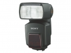

器材库 > 闪光灯 > HVL-F58AM

详细规格
发布日期
2008-07-07
厂家推荐价格
60,000.00 （日元）
闪光指数
GN58（105mm镜头：ISO100，以米为单位）
闪光涵盖范围
24~105mm（安装广角适配镜片可覆盖17mm焦距视角）
闪光次数
碱性电池约100次以上 / 镍氢电池约200次以上
回电时间
碱性电池约0.1~5秒 / 镍氢电池约0.1~3秒
闪光曝光控制
TTL直接测光 / 预发光测光 / 手动发光
自动对焦辅助光
中心：约0.5-10m，周边：约0.5-3m
无线闪光
可与α相机实现遥控
其他特点
反射闪光, 快速变化反射, 连续闪光, 高速快门同步闪光
电池
5号同类型电池4节（碱性/镍氢/锂电池）闪光灯电源适配器FA-EB1AM（6节5号电池）
尺寸
77×147×106mm
重量
440g
yulachen2014-05-26 21:235 分
操作性 5.00功能性 5.00美观性 5.00趣味性 5.00耐用性 5.00性价比 5.00
产品图 / 样片
HVL-F58AM